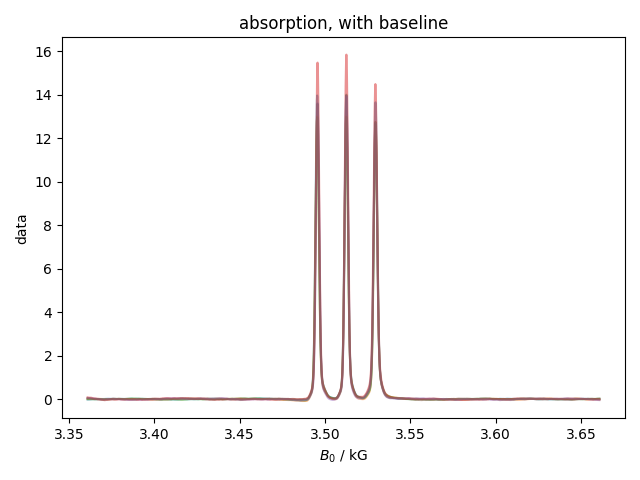
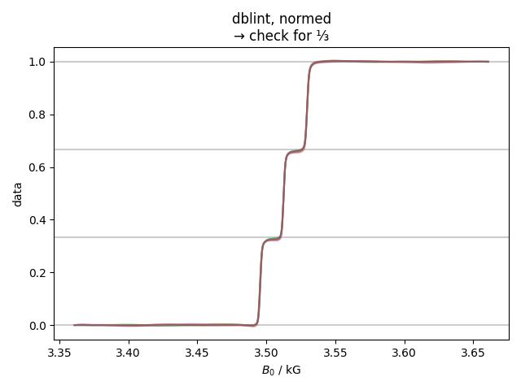

Note
Click here to download the full example code
Quantitative ESR¶
In this example, we baseline correct and integrate ESR data, and compare the result to the result of integration inside XEPR.
This makes use of the package pint, which is a very nice package for handling units.


- 

- 
G_R 81 dB
C_t 4.0 ms
power 2.0 mW
B_m 2.0 G
Q 4500.0
n_B 1
S 0.5
c 1
signal_denom 152012311.1661785 G·W⁰⋅⁵·s 152012311.1661785
peaksize 2.3925781279922376
specrange (3494.4472657918905, 3531.0683595876894)
c:\users\jmfranck\git_repos\pyspecdata\pyspecdata\core.py:1959: UserWarning: marker is redundantly defined by the 'marker' keyword argument and the fmt string "." (-> marker='.'). The keyword argument will take precedence.
retval = myplotfunc(*plotargs,**kwargs)
C:\Users\jmfranck\git_repos\pyspecdata\examples\QESR.py:86: RankWarning: Polyfit may be poorly conditioned
c = d_baseline.polyfit(fieldaxis, order=7)
G_R 81 dB
C_t 4.0 ms
power 2.0 mW
B_m 2.0 G
Q 4600.0
n_B 1
S 0.5
c 1
signal_denom 155390362.52542692 G·W⁰⋅⁵·s 155390362.52542692
peaksize 2.5390625031755008
specrange (3494.300781416707, 3531.0683595876894)
c:\users\jmfranck\git_repos\pyspecdata\pyspecdata\core.py:1959: UserWarning: marker is redundantly defined by the 'marker' keyword argument and the fmt string "." (-> marker='.'). The keyword argument will take precedence.
retval = myplotfunc(*plotargs,**kwargs)
C:\Users\jmfranck\git_repos\pyspecdata\examples\QESR.py:86: RankWarning: Polyfit may be poorly conditioned
c = d_baseline.polyfit(fieldaxis, order=7)
G_R 81 dB
C_t 4.0 ms
power 2.0 mW
B_m 2.0 G
Q 4600.0
n_B 1
S 0.5
c 1
signal_denom 155390362.52542692 G·W⁰⋅⁵·s 155390362.52542692
peaksize 2.441406253053325
specrange (3494.4472657918905, 3531.0683595876894)
c:\users\jmfranck\git_repos\pyspecdata\pyspecdata\core.py:1959: UserWarning: marker is redundantly defined by the 'marker' keyword argument and the fmt string "." (-> marker='.'). The keyword argument will take precedence.
retval = myplotfunc(*plotargs,**kwargs)
C:\Users\jmfranck\git_repos\pyspecdata\examples\QESR.py:86: RankWarning: Polyfit may be poorly conditioned
c = d_baseline.polyfit(fieldaxis, order=7)
G_R 81 dB
C_t 4.0 ms
power 2.0 mW
B_m 2.0 G
Q 5500.0
n_B 1
S 0.5
c 1
signal_denom 185792824.7586626 G·W⁰⋅⁵·s 185792824.7586626
peaksize 2.441406253053325
specrange (3494.5937501670737, 3530.921875212506)
c:\users\jmfranck\git_repos\pyspecdata\pyspecdata\core.py:1959: UserWarning: marker is redundantly defined by the 'marker' keyword argument and the fmt string "." (-> marker='.'). The keyword argument will take precedence.
retval = myplotfunc(*plotargs,**kwargs)
C:\Users\jmfranck\git_repos\pyspecdata\examples\QESR.py:86: RankWarning: Polyfit may be poorly conditioned
c = d_baseline.polyfit(fieldaxis, order=7)
G_R 81 dB
C_t 4.0 ms
power 2.0 mW
B_m 2.0 G
Q 5600.0
n_B 1
S 0.5
c 1
signal_denom 189170876.11791104 G·W⁰⋅⁵·s 189170876.11791104
peaksize 2.441406253053325
specrange (3494.5937501670737, 3530.921875212506)
c:\users\jmfranck\git_repos\pyspecdata\pyspecdata\core.py:1959: UserWarning: marker is redundantly defined by the 'marker' keyword argument and the fmt string "." (-> marker='.'). The keyword argument will take precedence.
retval = myplotfunc(*plotargs,**kwargs)
C:\Users\jmfranck\git_repos\pyspecdata\examples\QESR.py:86: RankWarning: Polyfit may be poorly conditioned
c = d_baseline.polyfit(fieldaxis, order=7)
G_R 81 dB
C_t 4.0 ms
power 2.0 mW
B_m 2.0 G
Q 5400.0
n_B 1
S 0.5
c 1
signal_denom 182414773.39941418 G·W⁰⋅⁵·s 182414773.39941418
peaksize 2.441406253053325
specrange (3494.5937501670737, 3530.921875212506)
c:\users\jmfranck\git_repos\pyspecdata\pyspecdata\core.py:1959: UserWarning: marker is redundantly defined by the 'marker' keyword argument and the fmt string "." (-> marker='.'). The keyword argument will take precedence.
retval = myplotfunc(*plotargs,**kwargs)
C:\Users\jmfranck\git_repos\pyspecdata\examples\QESR.py:86: RankWarning: Polyfit may be poorly conditioned
c = d_baseline.polyfit(fieldaxis, order=7)
Bruker: 190.80 Ours: 193.24
Bruker: 172.10 Ours: 172.67
Bruker: 177.70 Ours: 175.75
Bruker: 173.20 Ours: 172.07
Bruker: 144.60 Ours: 144.76
Bruker: 155.90 Ours: 153.04
from pyspecdata import *
import numpy as np
from matplotlib.pyplot import axvline, axhline, gca
from pint import UnitRegistry
ureg = UnitRegistry(system="mks",autoconvert_offset_to_baseunit=True, auto_reduce_dimensions=True)
Q_ = ureg.Quantity
colors = plt.rcParams["axes.prop_cycle"]() # this is the default matplotlib cycler for line styles
fieldaxis = '$B_0$'
pushout = 3
QESR_concs = r_[190.8,
172.1,
177.7,
173.2,
144.6,
155.9,]*1e-6
myconcs = []
with figlist_var() as fl:
background = find_file("QESR_Test_WaterCap_Background_210923.DSC", exp_type="francklab_esr/Sam")['harmonic',0]
#background -= background[fieldaxis, -100:].data.mean()
for filenum, (thisfile, thislabel) in enumerate([("QESR_150uM_TEMPOL_1_noglyc_210923.DSC", "sample #1"),
("QESR_150uM_TEMPOL_2_noglyc_210923.DSC", "sample #2"),
("QESR_150uM_TEMPOL_3_noglyc_210923.DSC", "sample #3"),
("QESR_150uM_TEMPOL_4_wglyc_210923.DSC", "sample #4"),
("QESR_150uM_TEMPOL_5_wglyc_210923.DSC", "sample #5"),
("QESR_150uM_TEMPOL_6_wglyc_210923.DSC", "sample #6"),
]):
d = find_file(thisfile, exp_type="francklab_esr/Sam")['harmonic',0]
G_R = Q_(*d.get_prop("Gain"))
C_t = Q_(*d.get_prop("ConvTime"))
# it seems like n is already divided out
#n = Q_(1,'dimensionless') # Q_(float(d.get_prop('AVGS')),'dimensionless')
power = Q_(*d.get_prop("Power"))
B_m = Q_(*d.get_prop("ModAmp"))
Q = Q_(float(d.get_prop('QValue')),'dimensionless')
#Q = Q_(5400.,'dimensionless')
n_B = Q_(1,'dimensionless') # calculate this
S = Q_(0.5,'dimensionless')
c = Q_(1,'dimensionless') # the first fraction on pg 2-17 -- essentially the conversion factor
signal_denom = G_R * C_t * sqrt(power) * B_m * Q * n_B * S * (S+1)
signal_denom = signal_denom.to(Q_('G')*sqrt(Q_('W'))*Q_('s'))
print(
f"G_R {G_R:~P}\n",
f"C_t {C_t:~P}\n",
f"power {power:~P}\n",
f"B_m {B_m:~P}\n",
f"Q {Q:~P}\n",
f"n_B {n_B:~P}\n",
f"S {S:~P}\n",
f"c {c:~P}\n",
f"signal_denom {signal_denom:~P} {signal_denom.magnitude}")
d.set_plot_color(next(colors)['color'])
#d -= d[fieldaxis, -100:].data.mean()
d -= background
fl.next("absorption, direct")
d_abs = d.C.integrate(fieldaxis, cumulative=True)
fl.plot(d_abs, alpha=0.5)
peaklist = d_abs.contiguous(lambda x: abs(x) > abs(x).data.max()/2)[:3,:]
peaksize = np.diff(peaklist, axis=1).mean()
print("peaksize",peaksize)
specrange = (peaklist.ravel().min(),peaklist.ravel().max())
print("specrange",specrange)
fl.next("d_abs. int, direct")
d_int_direct = d_abs.C
fl.plot(d_int_direct.integrate(fieldaxis, cumulative=True), alpha=0.5)
fl.next("absorption, direct")
generous_limits = specrange+r_[-pushout*peaksize,+pushout*peaksize]
for j in r_[np.array(specrange), generous_limits]:
axvline(x=j/1e3, alpha=0.1)
d_baseline = d_abs[fieldaxis, lambda x: np.logical_or(x<generous_limits[0], x>generous_limits[1])]
fl.next("for baseline")
fl.plot(d_baseline, '.', alpha=0.3, human_units=False)
middle_field = np.diff(d_baseline.getaxis(fieldaxis)[r_[0,-1]]).item()
d_baseline.setaxis(fieldaxis, lambda x: x-middle_field)
c = d_baseline.polyfit(fieldaxis, order=7)
polybaseline = d.fromaxis(fieldaxis).setaxis(fieldaxis, lambda x: x-middle_field).eval_poly(c,fieldaxis)
polybaseline.setaxis(fieldaxis, lambda x: x+middle_field)
fl.plot(polybaseline, alpha=0.5, human_units=False)
fl.next("absorption, with baseline")
d_abs -= polybaseline
fl.plot(d_abs, alpha=0.5)
d_abs.integrate(fieldaxis, cumulative=True)
fl.next("dblint ÷ denom")
fl.plot(d_abs/signal_denom.magnitude, alpha=0.5, label=f"{thislabel} (denominator ${signal_denom:~0.2L}$)")
expected_QESR = (d_abs/signal_denom.magnitude).data[-100:].mean()
fl.next("dblint")
fl.plot(d_abs, alpha=0.5, label=f"{thislabel}")
norm = d_abs.data[-100:].mean()
myconcs.append(expected_QESR)
fl.next("dblint, normed\n→ check for ⅓")
fl.plot(d_abs/norm, alpha=0.5)
if filenum == 0:
axhline(y=0, color='k', alpha=0.2)
axhline(y=1/3, color='k', alpha=0.2)
axhline(y=2/3, color='k', alpha=0.2)
axhline(y=1, color='k', alpha=0.2)
fl.next('compare my QESR to Bruker')
fl.plot(QESR_concs,myconcs,'x')
myconcs.append(0) # add a point at 0,0
m, b = np.polyfit(r_[QESR_concs,0],myconcs,1)
myconcs = myconcs[:-1]
x = r_[QESR_concs.min():QESR_concs.max():100j]
fl.plot(x,m*x+b,label='m=%g b=%g'%(m,b))
# from above m = 3.99635e-3
m_hardcode = 3.99635e-3
assert np.isclose(m,m_hardcode)
for j in range(len(myconcs)):
print("Bruker: %04.2f Ours: %04.2f"%(QESR_concs[j]/1e-6,myconcs[j]/m_hardcode/1e-6))
Total running time of the script: ( 0 minutes 1.756 seconds)